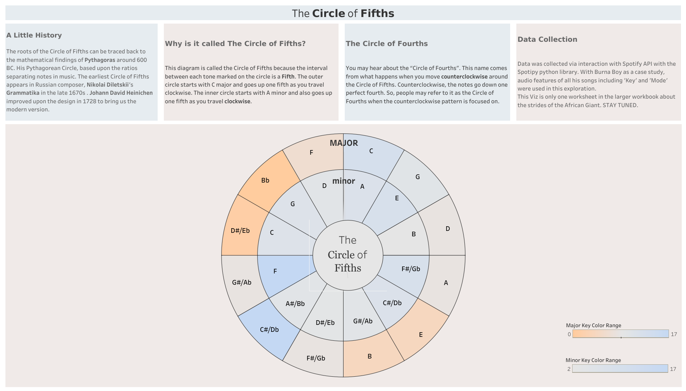
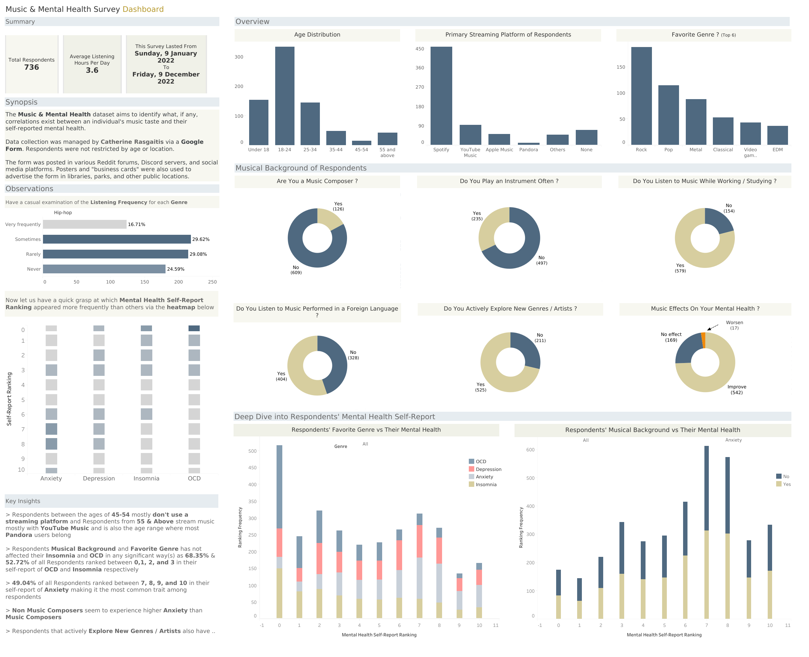

This database, designed with MySQL, serves as a central hub offering an
exhaustive perspective on the structural, operational, and strategic aspects of
database management tailored to cater to the needs of the European Film Industry.


Utilizing the Spotipy library in Python, Spotify artist data and playlists were scraped. Subsequently, rigorous data cleaning procedures were conducted to simplify the data and ensure this data is primed for visualization by users.

Exploring artist discography and the distribution of keys (major or minor) each musical piece is built on, mapped onto the Circle of Fifths. Artist data was extracted with Python and analysis was conducted with Tableau.

The Music & Mental Health Survey Analysis aims to identify what, if any, correlations exist between an individual’s music taste and their self-reported mental health.

Employing the Faker Python Library's data auto-generation capabilities to systematically populate a MySQL database with extensive dummy data, simulating hundreds of thousands of entries. This rigorous process serves two key objectives: testing the scalability of the database system and ensuring it meets the functional requirements for data retrieval and manipulation.

Combining the functionalities of Microsoft Access and MySQL, a user interface is designed via Forms. This interface facilitates seamless navigation through the database, enables efficient data entry and manipulation, and provides a comprehensive overview of database records.

This project showcases a fully integrated database system deployed to Microsoft Power BI Service providing users with insightful visualizations and real-time data analysis capabilities. This interface was designed to be user-friendly, allowing even non-technical users to make informed decisions based on the data presented.